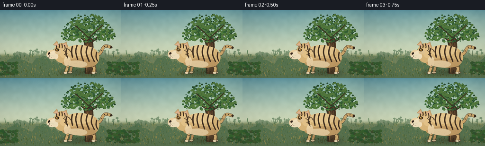
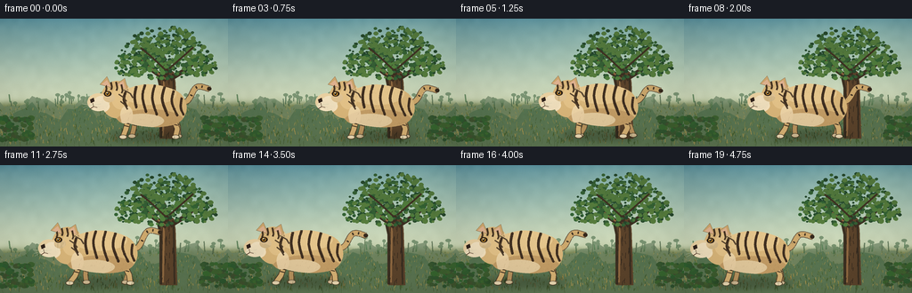
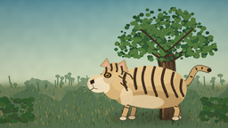
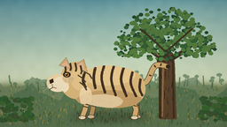
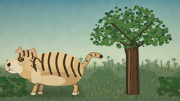
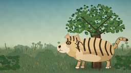

CODING AGENTS AS PIXEL WORLD MODELS
traex/DeepSeek-V4.1-Flash · instance_preservation_0055
点击播放 · 原生 RGB 像素
逐轮保存的候选
回放视频、检查图与代码变化。
每份候选均可单独播放。实际图片检查记录在下方工具轨迹中。
候选 01播放与检查图
点击播放 · 原生 RGB 像素


展开代码变化
--- 上一保存版本
+++ 本次保存版本
@@ -0,0 +1,604 @@
+from pathlib import Path
+
+import numpy as np
+from PIL import Image, ImageDraw, ImageFilter
+
+import artifact_io
+
+
+CASE_DIR = Path(__file__).resolve().parent
+WIDTH, HEIGHT, FRAMES, FPS = 256, 144, 20, 4.0
+SCALE = 4
+IW, IH = WIDTH * SCALE, HEIGHT * SCALE
+
+
+def rgb(value):
+ return tuple(int(v) for v in value)
+
+
+def scaled_points(points):
+ return [(float(x) * SCALE, float(y) * SCALE) for x, y in points]
+
+
+def smoothstep(value):
+ value = float(np.clip(value, 0.0, 1.0))
+ return value * value * (3.0 - 2.0 * value)
+
+
+def catmull_rom(points, samples=18, closed=False):
+ points = np.asarray(points, dtype=np.float32)
+ if closed:
+ points = np.vstack((points[-1], points, points[0], points[1]))
+ count = len(points) - 3
+ else:
+ points = np.vstack((points[0], points, points[-1]))
+ count = len(points) - 3
+ result = []
+ for index in range(count):
+ p0, p1, p2, p3 = points[index : index + 4]
+ for t in np.linspace(0.0, 1.0, samples, endpoint=False):
+ t2, t3 = t * t, t * t * t
+ value = 0.5 * (
+ (2.0 * p1)
+ + (-p0 + p2) * t
+ + (2.0 * p0 - 5.0 * p1 + 4.0 * p2 - p3) * t2
+ + (-p0 + 3.0 * p1 - 3.0 * p2 + p3) * t3
+ )
+ result.append(tuple(value))
+ if not closed:
+ result.append(tuple(points[-2]))
+ return scaled_points(result)
+
+
+def smooth_noise(rng, height, width, cell):
+ small = rng.random((height // cell + 2, width // cell + 2)).astype(np.float32)
+ image = Image.fromarray(np.uint8(np.clip(small, 0, 1) * 255), "L")
+ image = image.resize((width, height), Image.Resampling.BICUBIC)
+ return np.asarray(image, dtype=np.float32) / 255.0
+
+
+def make_background():
+ rng = np.random.default_rng(80421)
+ yy, xx = np.mgrid[0:IH, 0:IW].astype(np.float32)
+ yn = yy / (IH - 1)
+ xn = xx / (IW - 1)
+
+ top = np.array([91, 150, 164], dtype=np.float32)
+ horizon = np.array([211, 220, 185], dtype=np.float32)
+ sky_mix = np.clip(yn / 0.68, 0.0, 1.0)[..., None]
+ sky_mix = sky_mix ** 0.72
+ sky = top * (1.0 - sky_mix) + horizon * sky_mix
+
+ haze = np.exp(-((yn - 0.53) / 0.16) ** 2) * (0.55 + 0.45 * (1.0 - xn))
+ sky = sky * (1.0 - haze[..., None] * 0.12) + np.array([244, 235, 202]) * haze[..., None] * 0.12
+
+ ground_mask = 1.0 / (1.0 + np.exp(-(yy - 95.0 * SCALE) / (2.2 * SCALE)))
+ ground_top = np.array([102, 121, 72], dtype=np.float32)
+ ground_bottom = np.array([151, 135, 78], dtype=np.float32)
+ ground_mix = np.clip((yn - 0.64) / 0.38, 0.0, 1.0)[..., None]
+ ground = ground_top * (1.0 - ground_mix) + ground_bottom * ground_mix
+
+ path = np.exp(-((yy - 125.0 * SCALE) / (14.0 * SCALE)) ** 2)
+ path *= np.clip((xx - 20 * SCALE) / (235 * SCALE), 0.0, 1.0) ** 0.2
+ ground = ground * (1.0 - 0.18 * path[..., None]) + np.array([189, 165, 103]) * 0.18 * path[..., None]
+
+ sky_noise = smooth_noise(rng, IH, IW, 28) - 0.5
+ ground_noise = smooth_noise(rng, IH, IW, 12) - 0.5
+ image = sky * (1.0 - ground_mask[..., None]) + ground * ground_mask[..., None]
+ image += (sky_noise * 6.0)[..., None]
+ image += (ground_noise * 13.0 * ground_mask)[..., None]
+
+ sun = np.exp(-(((xx - 790) / 300.0) ** 2 + ((yy - 70) / 190.0) ** 2))
+ image += sun[..., None] * np.array([20.0, 16.0, 8.0])
+ background = Image.fromarray(np.uint8(np.clip(image, 0, 255)), "RGB").convert("RGBA")
+
+ far = Image.new("RGBA", (IW, IH), (0, 0, 0, 0))
+ fd = ImageDraw.Draw(far)
+ for layer, color, base_y, height in [
+ (0, (108, 132, 101, 180), 86, 18),
+ (1, (79, 113, 82, 205), 94, 24),
+ ]:
+ pts = []
+ for x in range(-20, WIDTH + 30, 8):
+ y = base_y + height * (0.45 + 0.32 * np.sin(x * 0.11 + layer) + 0.15 * np.sin(x * 0.31))
+ pts.append((x * SCALE, y * SCALE))
+ polygon = [(0, IH)] + pts + [(IW, IH)]
+ fd.polygon(polygon, fill=color)
+
+ for _ in range(55):
+ x = rng.uniform(4, 252)
+ base = rng.uniform(93, 101)
+ h = rng.uniform(4, 13)
+ width = rng.uniform(0.7, 1.8)
+ color = (55 + int(rng.integers(0, 18)), 89 + int(rng.integers(0, 20)), 65, 180)
+ fd.line(scaled_points([(x, base), (x + rng.uniform(-1, 1), base - h)]), fill=color, width=max(1, round(width * SCALE)))
+ if rng.random() < 0.7:
+ fd.ellipse(
+ ((x - rng.uniform(1.5, 3.5)) * SCALE, (base - h - 1) * SCALE,
+ (x + rng.uniform(1.5, 3.5)) * SCALE, (base - h + 2.5) * SCALE),
+ fill=(69, 105, 70, 150),
+ )
+ background.alpha_composite(far)
+
+ draw = ImageDraw.Draw(background, "RGBA")
+
+ # Fine grass blades in the meadow.
+ for _ in range(850):
+ x = rng.uniform(0, WIDTH)
+ y = rng.uniform(98, 142)
+ depth = np.clip((y - 96) / 46, 0, 1)
+ length = rng.uniform(1.3, 4.2) * (0.55 + 0.7 * depth)
+ lean = rng.uniform(-1.0, 1.0)
+ value = int(rng.integers(0, 4))
+ palette = [(66, 91, 48, 80), (88, 112, 56, 90), (126, 130, 68, 70), (167, 147, 80, 60)]
+ draw.line(
+ scaled_points([(x, y), (x + lean, y - length)]),
+ fill=palette[value],
+ width=max(1, round((0.35 + depth * 0.45) * SCALE)),
+ )
+
+ # Tree roots and trunk sit behind the tiger.
+ trunk_fill = (91, 67, 43, 255)
+ trunk_dark = (60, 48, 34, 255)
+ trunk_light = (143, 105, 65, 255)
+ trunk_poly = [(180, 135), (180, 79), (177, 68), (181, 59), (188, 56),
+ (195, 60), (197, 72), (199, 135)]
+ draw.polygon(scaled_points(trunk_poly), fill=trunk_fill)
+ draw.line(scaled_points([(180.5, 134), (180.5, 78), (178, 67)]), fill=trunk_dark, width=3 * SCALE)
+ draw.line(scaled_points([(183, 132), (184, 75), (182, 61)]), fill=trunk_light, width=2 * SCALE)
+ draw.line(scaled_points([(196, 134), (195, 75), (194, 62)]), fill=trunk_dark, width=2 * SCALE)
+
+ # Branches and bark texture.
+ draw.line(scaled_points([(187, 69), (165, 53), (157, 43)]), fill=trunk_dark, width=6 * SCALE)
+ draw.line(scaled_points([(191, 68), (212, 55), (222, 43)]), fill=trunk_dark, width=5 * SCALE)
+ draw.line(scaled_points([(187, 64), (185, 48), (179, 36)]), fill=trunk_dark, width=6 * SCALE)
+ draw.line(scaled_points([(186, 68), (168, 55), (159, 45)]), fill=trunk_light, width=2 * SCALE)
+
+ for _ in range(28):
+ x = rng.uniform(181, 197)
+ y = rng.uniform(64, 131)
+ length = rng.uniform(2, 8)
+ shade = (45, 36, 27, int(rng.integers(45, 105)))
+ draw.line(scaled_points([(x, y), (x + rng.uniform(-1, 1), y + length)]), fill=shade, width=max(1, round(0.5 * SCALE)))
+
+ # Irregular canopy built from many small leaf clusters.
+ canopy_centers = [
+ (184, 39, 34, 22), (158, 43, 25, 19), (211, 43, 27, 19),
+ (173, 27, 25, 17), (198, 25, 23, 16), (147, 53, 18, 13),
+ (225, 53, 18, 12), (185, 55, 31, 14),
+ ]
+ for layer in range(3):
+ for cindex, (cx, cy, rx, ry) in enumerate(canopy_centers):
+ for _ in range(28):
+ theta = rng.uniform(0, np.pi * 2)
+ radius = np.sqrt(rng.random())
+ x = cx + np.cos(theta) * rx * radius
+ y = cy + np.sin(theta) * ry * radius
+ size = rng.uniform(1.2, 3.0) * (0.85 + layer * 0.12)
+ if layer == 0:
+ color = (36 + cindex % 4, 70 + cindex % 6, 44, 235)
+ elif layer == 1:
+ color = (51 + cindex % 5, 94 + cindex % 7, 52, 220)
+ else:
+ color = (81 + cindex % 7, 119 + cindex % 9, 61, 180)
+ draw.ellipse(
+ ((x - size) * SCALE, (y - size * 0.8) * SCALE,
+ (x + size) * SCALE, (y + size * 0.8) * SCALE),
+ fill=color,
+ )
+
+ # A few darker branches show through the leaves.
+ draw.line(scaled_points([(186, 58), (169, 42), (158, 33)]), fill=(63, 50, 35, 170), width=2 * SCALE)
+ draw.line(scaled_points([(190, 56), (207, 41), (217, 32)]), fill=(63, 50, 35, 160), width=2 * SCALE)
+
+ # Low shrubs frame the scene without competing with the tiger.
+ for _ in range(170):
+ side = rng.choice([-1, 1])
+ x = rng.uniform(0, 36) if side < 0 else rng.uniform(225, 256)
+ y = rng.uniform(111, 137)
+ radius = rng.uniform(1.0, 4.0)
+ color = (46 + int(rng.integers(0, 20)), 79 + int(rng.integers(0, 24)), 47, 145)
+ draw.ellipse(
+ ((x - radius) * SCALE, (y - radius * 0.75) * SCALE,
+ (x + radius) * SCALE, (y + radius * 0.75) * SCALE),
+ fill=color,
+ )
+
+ return background
+
+
+def draw_shadow(canvas, cx, cy):
+ shadow = Image.new("RGBA", (IW, IH), (0, 0, 0, 0))
+ draw = ImageDraw.Draw(shadow)
+ x0 = (cx - 47) * SCALE
+ y0 = (cy + 27) * SCALE
+ x1 = (cx + 43) * SCALE
+ y1 = (cy + 36) * SCALE
+ draw.ellipse((x0, y0, x1, y1), fill=(38, 45, 27, 94))
+ shadow = shadow.filter(ImageFilter.GaussianBlur(4.0 * SCALE))
+ canvas.alpha_composite(shadow)
+
+
+def line_with_outline(draw, points, fill, outline, width):
+ draw.line(points, fill=outline, width=round((width + 1.4) * SCALE), joint="curve")
+ draw.line(points, fill=fill, width=round(width * SCALE), joint="curve")
+
+
+def draw_tail(draw, cx, cy, sway, moving):
+ base = (cx + 29, cy - 5)
+ control1 = (cx + 41, cy - 9)
+ control2 = (cx + 51, cy - 24 + sway)
+ tip = (cx + 65, cy - 22 + sway * 1.35)
+ points = catmull_rom([base, control1, control2, tip], samples=18)
+ line_with_outline(draw, points, (205, 168, 108, 255), (83, 58, 38, 210), 5.6)
+
+ # Tail bands.
+ for fraction, band_width in [(0.48, 2.1), (0.65, 2.4), (0.81, 2.2), (0.95, 2.5)]:
+ idx = min(len(points) - 2, int(fraction * (len(points) - 1)))
+ p = np.array(points[idx])
+ q = np.array(points[min(idx + 2, len(points) - 1)])
+ tangent = q - p
+ tangent /= max(1e-6, np.linalg.norm(tangent))
+ normal = np.array([-tangent[1], tangent[0]])
+ a = p - normal * band_width * 0.62 * SCALE
+ b = p + normal * band_width * 0.62 * SCALE
+ draw.line([tuple(a), tuple(b)], fill=(57, 43, 30, 245), width=round(1.6 * SCALE))
+ draw.ellipse(
+ ((tip[0] - 2.4) * SCALE, (tip[1] - 2.2) * SCALE,
+ (tip[0] + 2.4) * SCALE, (tip[1] + 2.2) * SCALE),
+ fill=(54, 41, 29, 255),
+ )
+
+
+def draw_leg(draw, anchor, knee, paw, near, moving):
+ outline = (76, 54, 35, 210)
+ fur = (213, 176, 115, 255) if near else (183, 146, 93, 255)
+ paw_color = (233, 215, 177, 255) if near else (205, 184, 145, 255)
+ points = scaled_points([anchor, knee, paw])
+ line_with_outline(draw, points, fur, outline, 5.3 if near else 4.7)
+
+ # Short stripe marks wrap the upper leg.
+ ax, ay = anchor
+ kx, ky = knee
+ for t in (0.35, 0.62):
+ x = ax + (kx - ax) * t
+ y = ay + (ky - ay) * t
+ draw.line(
+ scaled_points([(x - 2.4, y - 0.4), (x + 2.4, y + 0.8)]),
+ fill=(75, 53, 36, 220 if near else 165),
+ width=round(1.3 * SCALE),
+ )
+ px, py = paw
+ draw.ellipse(
+ ((px - 4.4) * SCALE, (py - 2.2) * SCALE,
+ (px + 4.6) * SCALE, (py + 2.7) * SCALE),
+ fill=outline,
+ )
+ draw.ellipse(
+ ((px - 3.7) * SCALE, (py - 1.7) * SCALE,
+ (px + 3.9) * SCALE, (py + 2.0) * SCALE),
+ fill=paw_color,
+ )
+
+
+def draw_tiger(canvas, cx, cy, gait, sway, moving):
+ layer = Image.new("RGBA", (IW, IH), (0, 0, 0, 0))
+ draw = ImageDraw.Draw(layer, "RGBA")
+
+ draw_tail(draw, cx, cy, sway, moving)
+
+ stride = np.sin(gait) if moving else 0.0
+ stride_other = np.sin(gait + np.pi) if moving else 0.0
+
+ # Far legs first.
+ draw_leg(
+ draw,
+ (cx - 18, cy + 12),
+ (cx - 20 + 1.3 * stride_other, cy + 23),
+ (cx - 22 + 4.6 * stride_other, cy + 31),
+ False,
+ moving,
+ )
+ draw_leg(
+ draw,
+ (cx + 27, cy + 10),
+ (cx + 30 + 1.2 * stride, cy + 22),
+ (cx + 30 + 4.5 * stride, cy + 31),
+ False,
+ moving,
+ )
+
+ # Near legs.
+ draw_leg(
+ draw,
+ (cx - 26, cy + 13),
+ (cx - 29 + 1.6 * stride, cy + 24),
+ (cx - 32 + 5.2 * stride, cy + 32),
+ True,
+ moving,
+ )
+ draw_leg(
+ draw,
+ (cx + 24, cy + 11),
+ (cx + 29 + 1.5 * stride_other, cy + 23),
+ (cx + 27 + 5.0 * stride_other, cy + 32),
+ True,
+ moving,
+ )
+
+ # Main torso, neck, and head silhouette.
+ body_points = [
+ (cx - 35, cy - 6), (cx - 31, cy - 19), (cx - 18, cy - 25),
+ (cx - 2, cy - 27), (cx + 17, cy - 24), (cx + 32, cy - 17),
+ (cx + 39, cy - 5), (cx + 38, cy + 7), (cx + 29, cy + 17),
+ (cx + 10, cy + 21), (cx - 11, cy + 20), (cx - 27, cy + 16),
+ (cx - 36, cy + 8),
+ ]
+ body_poly = catmull_rom(body_points, samples=20, closed=True)
+ silhouette = Image.new("L", (IW, IH), 0)
+ sd = ImageDraw.Draw(silhouette)
+ sd.polygon(body_poly, fill=255)
+ sd.ellipse(
+ ((cx - 57) * SCALE, (cy - 31) * SCALE,
+ (cx - 21) * SCALE, (cy + 11) * SCALE),
+ fill=255,
+ )
+ sd.ellipse(
+ ((cx - 72) * SCALE, (cy - 17) * SCALE,
+ (cx - 47) * SCALE, (cy + 3) * SCALE),
+ fill=255,
+ )
+ sd.ellipse(
+ ((cx - 43) * SCALE, (cy - 20) * SCALE,
+ (cx - 17) * SCALE, (cy + 17) * SCALE),
+ fill=255,
+ )
+
+ base_color = (216, 181, 121, 255)
+ draw.polygon(body_poly, fill=base_color)
+ draw.ellipse(
+ ((cx - 57) * SCALE, (cy - 31) * SCALE,
+ (cx - 21) * SCALE, (cy + 11) * SCALE),
+ fill=base_color,
+ )
+ draw.ellipse(
+ ((cx - 43) * SCALE, (cy - 20) * SCALE,
+ (cx - 17) * SCALE, (cy + 17) * SCALE),
+ fill=base_color,
+ )
+ draw.ellipse(
+ ((cx - 72) * SCALE, (cy - 17) * SCALE,
+ (cx - 47) * SCALE, (cy + 3) * SCALE),
+ fill=(233, 208, 161, 255),
+ )
+
+ # Soft volume: warm underside and sunlit back.
+ shade = Image.new("RGBA", (IW, IH), (0, 0, 0, 0))
+ shd = ImageDraw.Draw(shade, "RGBA")
+ shd.ellipse(
+ ((cx - 40) * SCALE, (cy + 1) * SCALE,
+ (cx + 37) * SCALE, (cy + 29) * SCALE),
+ fill=(154, 113, 66, 92),
+ )
+ shd.ellipse(
+ ((cx - 33) * SCALE, (cy - 29) * SCALE,
+ (cx + 28) * SCALE, (cy - 4) * SCALE),
+ fill=(250, 224, 172, 100),
+ )
+ shd.ellipse(
+ ((cx - 45) * SCALE, (cy - 25) * SCALE,
+ (cx - 25) * SCALE, (cy + 1) * SCALE),
+ fill=(248, 219, 164, 90),
+ )
+ shade = Image.composite(shade, Image.new("RGBA", (IW, IH), (0, 0, 0, 0)), silhouette)
+ layer.alpha_composite(shade)
+
+ # Cream chin, chest, and belly.
+ light = Image.new("RGBA", (IW, IH), (0, 0, 0, 0))
+ ld = ImageDraw.Draw(light, "RGBA")
+ ld.ellipse(
+ ((cx - 70) * SCALE, (cy - 10) * SCALE,
+ (cx - 47) * SCALE, (cy + 5) * SCALE),
+ fill=(245, 228, 194, 235),
+ )
+ ld.ellipse(
+ ((cx - 34) * SCALE, (cy + 6) * SCALE,
+ (cx + 14) * SCALE, (cy + 22) * SCALE),
+ fill=(239, 219, 179, 178),
+ )
+ ld.ellipse(
+ ((cx - 35) * SCALE, (cy - 3) * SCALE,
+ (cx - 21) * SCALE, (cy + 18) * SCALE),
+ fill=(241, 219, 177, 200),
+ )
+ light = Image.composite(light, Image.new("RGBA", (IW, IH), (0, 0, 0, 0)), silhouette)
+ layer.alpha_composite(light)
+
+ # Ears.
+ left_ear = [(cx - 58, cy - 27), (cx - 50, cy - 36), (cx - 44, cy - 23)]
+ right_ear = [(cx - 39, cy - 28), (cx - 30, cy - 34), (cx - 26, cy - 20)]
+ draw.polygon(scaled_points(left_ear), fill=(204, 165, 108, 255), outline=(83, 58, 38, 220))
+ draw.polygon(scaled_points(right_ear), fill=(204, 165, 108, 255), outline=(83, 58, 38, 220))
+ draw.polygon(scaled_points([(cx - 56, cy - 27), (cx - 50, cy - 32), (cx - 46, cy - 24)]), fill=(222, 177, 143, 255))
+ draw.polygon(scaled_points([(cx - 38, cy - 27), (cx - 32, cy - 31), (cx - 29, cy - 22)]), fill=(222, 177, 143, 255))
+
+ # Fur strokes, clipped to the animal.
+ fur = Image.new("RGBA", (IW, IH), (0, 0, 0, 0))
+ fd = ImageDraw.Draw(fur, "RGBA")
+ rng = np.random.default_rng(1180)
+ for _ in range(190):
+ x = rng.uniform(cx - 33, cx + 36)
+ y = rng.uniform(cy - 23, cy + 18)
+ length = rng.uniform(0.7, 2.0)
+ value = (113, 82, 49, 54) if rng.random() < 0.55 else (251, 227, 182, 54)
+ fd.line(
+ scaled_points([(x, y), (x - length * 0.45, y + length)]),
+ fill=value,
+ width=max(1, round(0.35 * SCALE)),
+ )
+ fur = Image.composite(fur, Image.new("RGBA", (IW, IH), (0, 0, 0, 0)), silhouette)
+ layer.alpha_composite(fur)
+
+ # Dark tiger stripes, tapered and clipped to the body.
+ stripes = Image.new("RGBA", (IW, IH), (0, 0, 0, 0))
+ st = ImageDraw.Draw(stripes, "RGBA")
+ body_stripes = [
+ [(cx - 17, cy - 25), (cx - 19, cy - 13), (cx - 17, cy - 1)],
+ [(cx - 7, cy - 27), (cx - 10, cy - 13), (cx - 6, cy + 4)],
+ [(cx + 4, cy - 27), (cx + 1, cy - 11), (cx + 6, cy + 7)],
+ [(cx + 15, cy - 25), (cx + 12, cy - 10), (cx + 18, cy + 8)],
+ [(cx + 25, cy - 20), (cx + 23, cy - 7), (cx + 29, cy + 8)],
+ [(cx + 34, cy - 12), (cx + 33, cy - 1), (cx + 36, cy + 7)],
+ [(cx - 29, cy - 19), (cx - 31, cy - 10), (cx - 28, cy - 2)],
+ ]
+ for index, points in enumerate(body_stripes):
+ curve = catmull_rom(points, samples=16)
+ st.line(curve, fill=(57, 42, 29, 245), width=round((3.0 - 0.18 * (index % 3)) * SCALE), joint="curve")
+ end = np.array(curve[-1])
+ st.ellipse(
+ ((end[0] / SCALE - 1.2) * SCALE, (end[1] / SCALE - 1.0) * SCALE,
+ (end[0] / SCALE + 1.2) * SCALE, (end[1] / SCALE + 1.0) * SCALE),
+ fill=(57, 42, 29, 245),
+ )
+
+ # Forehead and cheek bars.
+ for offset, top in [(-52, -29), (-46, -31), (-40, -30), (-34, -27)]:
+ st.line(
+ scaled_points([(cx + offset, cy + top), (cx + offset + 1.5, cy + top + 7), (cx + offset + 0.5, cy + top + 10)]),
+ fill=(59, 43, 29, 240),
+ width=round(1.9 * SCALE),
+ )
+ st.line(scaled_points([(cx - 37, cy - 16), (cx - 31, cy - 12), (cx - 28, cy - 8)]), fill=(58, 43, 29, 220), width=round(1.6 * SCALE))
+ st.line(scaled_points([(cx - 35, cy - 8), (cx - 30, cy - 4), (cx - 27, cy + 1)]), fill=(58, 43, 29, 220), width=round(1.5 * SCALE))
+ st.line(scaled_points([(cx - 31, cy - 21), (cx - 24, cy - 17), (cx - 21, cy - 12)]), fill=(58, 43, 29, 210), width=round(1.4 * SCALE))
+ stripes = Image.composite(stripes, Image.new("RGBA", (IW, IH), (0, 0, 0, 0)), silhouette)
+ layer.alpha_composite(stripes)
+
+ # Subtle face structure over the stripes.
+ draw.ellipse(
+ ((cx - 65) * SCALE, (cy - 14) * SCALE,
+ (cx - 48) * SCALE, (cy + 2) * SCALE),
+ fill=(243, 225, 191, 245),
+ )
+ draw.ellipse(
+ ((cx - 54) * SCALE, (cy - 17) * SCALE,
+ (cx - 41) * SCALE, (cy - 7) * SCALE),
+ fill=(227, 190, 139, 210),
+ )
+ # Eye, amber iris, and highlight.
+ draw.ellipse(
+ ((cx - 53.5) * SCALE, (cy - 19.5) * SCALE,
+ (cx - 45.0) * SCALE, (cy - 13.5) * SCALE),
+ fill=(45, 33, 23, 255),
+ )
+ draw.ellipse(
+ ((cx - 51.7) * SCALE, (cy - 18.6) * SCALE,
+ (cx - 47.0) * SCALE, (cy - 14.4) * SCALE),
+ fill=(191, 135, 45, 255),
+ )
+ draw.ellipse(
+ ((cx - 50.6) * SCALE, (cy - 18.1) * SCALE,
+ (cx - 48.1) * SCALE, (cy - 15.4) * SCALE),
+ fill=(24, 20, 17, 255),
+ )
+ draw.ellipse(
+ ((cx - 50.3) * SCALE, (cy - 18.0) * SCALE,
+ (cx - 49.1) * SCALE, (cy - 16.8) * SCALE),
+ fill=(255, 247, 215, 230),
+ )
+
+ # Nose and mouth.
+ draw.polygon(
+ scaled_points([(cx - 69, cy - 10), (cx - 65, cy - 12), (cx - 64, cy - 8), (cx - 68, cy - 6)]),
+ fill=(48, 35, 28, 255),
+ )
+ draw.line(
+ scaled_points([(cx - 66, cy - 6), (cx - 65, cy - 2), (cx - 61, cy - 1)]),
+ fill=(91, 62, 47, 225),
+ width=round(0.8 * SCALE),
+ )
+ draw.line(
+ scaled_points([(cx - 65, cy - 2), (cx - 69, cy + 0.5)]),
+ fill=(91, 62, 47, 220),
+ width=round(0.75 * SCALE),
+ )
+ for x_end, y_end in [(-78, -5), (-77, -1), (-76, 2), (-57, -5), (-58, -1)]:
+ draw.line(
+ scaled_points([(cx - 66, cy - 4), (cx + x_end, cy + y_end)]),
+ fill=(252, 241, 209, 165),
+ width=max(1, round(0.35 * SCALE)),
+ )
+
+ # Fine fur rim along the upper silhouette.
+ rim = Image.new("RGBA", (IW, IH), (0, 0, 0, 0))
+ rd = ImageDraw.Draw(rim, "RGBA")
+ rd.arc(
+ ((cx - 34) * SCALE, (cy - 29) * SCALE,
+ (cx + 37) * SCALE, (cy + 2) * SCALE),
+ start=185, end=338, fill=(249, 226, 179, 110), width=round(0.7 * SCALE),
+ )
+ rim = Image.composite(rim, Image.new("RGBA", (IW, IH), (0, 0, 0, 0)), silhouette)
+ layer.alpha_composite(rim)
+
+ canvas.alpha_composite(layer)
+
+
+def make_frames():
+ background = make_background()
+ frames = []
+ for index in range(FRAMES):
+ frame = background.copy()
+
+ raw_progress = (index - 3.0) / 14.0
+ progress = smoothstep(raw_progress)
+ moving = 3 < index < 17
+ cx = 170.0 - 91.0 * progress
+
+ idle = 0.30 * np.sin(index * 0.72)
+ step_bob = 0.9 * np.sin(progress * np.pi * 6.0) ** 2 if moving else 0.0
+ cy = 101.0 + idle - step_bob
+
+ gait = progress * np.pi * 6.0
+ sway = 1.3 * np.sin(index * 0.38) + 2.0 * np.sin(progress * np.pi * 3.0)
+
+ draw_shadow(frame, cx, cy)
+ draw_tiger(frame, cx, cy, gait, sway, moving)
+
+ # A light foreground grass fringe anchors the feet in the meadow.
+ fg = Image.new("RGBA", (IW, IH), (0, 0, 0, 0))
+ fg_draw = ImageDraw.Draw(fg, "RGBA")
+ rng = np.random.default_rng(771 + index)
+ for _ in range(95):
+ x = rng.uniform(0, WIDTH)
+ y = rng.uniform(135, 145)
+ length = rng.uniform(2.0, 6.5)
+ fg_draw.line(
+ scaled_points([(x, y), (x + rng.uniform(-1.2, 1.2), y - length)]),
+ fill=(56, 76, 38, int(rng.integers(75, 145))),
+ width=max(1, round(rng.uniform(0.35, 0.75) * SCALE)),
+ )
+ frame.alpha_composite(fg)
+
+ # Gentle vignette and a hint of film grain preserve a painted look.
+ frame_rgb = np.asarray(frame.convert("RGB"), dtype=np.float32)
+ yy, xx = np.mgrid[0:IH, 0:IW]
+ vignette = 1.0 - 0.13 * (
+ ((xx - IW * 0.5) / (IW * 0.72)) ** 2 + ((yy - IH * 0.52) / (IH * 0.72)) ** 2
+ )
+ frame_rgb *= np.clip(vignette, 0.82, 1.0)[..., None]
+ grain = np.random.default_rng(990 + index).normal(0.0, 1.4, (IH, IW, 1))
+ frame_rgb += grain
+ frame_rgb = np.uint8(np.clip(frame_rgb, 0, 255))
+ frame_small = Image.fromarray(frame_rgb, "RGB").resize((WIDTH, HEIGHT), Image.Resampling.LANCZOS)
+ frames.append(np.asarray(frame_small, dtype=np.uint8))
+ return np.stack(frames)
+
+
+def main():
+ frames = make_frames()
+ artifact_io.save(frames, CASE_DIR)
+ print(f"saved {len(frames)} RGB frames to {CASE_DIR}")
+
+
+if __name__ == "__main__":
+ main()
候选 02播放与检查图
点击播放 · 原生 RGB 像素

展开代码变化
--- 上一保存版本
+++ 本次保存版本
@@ -52,7 +52,7 @@
def smooth_noise(rng, height, width, cell):
small = rng.random((height // cell + 2, width // cell + 2)).astype(np.float32)
- image = Image.fromarray(np.uint8(np.clip(small, 0, 1) * 255), "L")
+ image = Image.fromarray(np.uint8(np.clip(small, 0, 1) * 255))
image = image.resize((width, height), Image.Resampling.BICUBIC)
return np.asarray(image, dtype=np.float32) / 255.0
@@ -90,7 +90,7 @@
sun = np.exp(-(((xx - 790) / 300.0) ** 2 + ((yy - 70) / 190.0) ** 2))
image += sun[..., None] * np.array([20.0, 16.0, 8.0])
- background = Image.fromarray(np.uint8(np.clip(image, 0, 255)), "RGB").convert("RGBA")
+ background = Image.fromarray(np.uint8(np.clip(image, 0, 255))).convert("RGBA")
far = Image.new("RGBA", (IW, IH), (0, 0, 0, 0))
fd = ImageDraw.Draw(far)
@@ -487,24 +487,24 @@
)
# Eye, amber iris, and highlight.
draw.ellipse(
- ((cx - 53.5) * SCALE, (cy - 19.5) * SCALE,
- (cx - 45.0) * SCALE, (cy - 13.5) * SCALE),
+ ((cx - 54.0) * SCALE, (cy - 20.2) * SCALE,
+ (cx - 44.0) * SCALE, (cy - 12.9) * SCALE),
fill=(45, 33, 23, 255),
)
draw.ellipse(
- ((cx - 51.7) * SCALE, (cy - 18.6) * SCALE,
- (cx - 47.0) * SCALE, (cy - 14.4) * SCALE),
- fill=(191, 135, 45, 255),
- )
- draw.ellipse(
- ((cx - 50.6) * SCALE, (cy - 18.1) * SCALE,
- (cx - 48.1) * SCALE, (cy - 15.4) * SCALE),
+ ((cx - 52.0) * SCALE, (cy - 19.1) * SCALE,
+ (cx - 46.0) * SCALE, (cy - 13.9) * SCALE),
+ fill=(198, 140, 44, 255),
+ )
+ draw.ellipse(
+ ((cx - 50.6) * SCALE, (cy - 18.5) * SCALE,
+ (cx - 47.6) * SCALE, (cy - 15.0) * SCALE),
fill=(24, 20, 17, 255),
)
draw.ellipse(
- ((cx - 50.3) * SCALE, (cy - 18.0) * SCALE,
- (cx - 49.1) * SCALE, (cy - 16.8) * SCALE),
- fill=(255, 247, 215, 230),
+ ((cx - 50.2) * SCALE, (cy - 18.2) * SCALE,
+ (cx - 48.8) * SCALE, (cy - 16.7) * SCALE),
+ fill=(255, 247, 215, 235),
)
# Nose and mouth.
@@ -552,7 +552,7 @@
raw_progress = (index - 3.0) / 14.0
progress = smoothstep(raw_progress)
moving = 3 < index < 17
- cx = 170.0 - 91.0 * progress
+ cx = 183.0 - 107.0 * progress
idle = 0.30 * np.sin(index * 0.72)
step_bob = 0.9 * np.sin(progress * np.pi * 6.0) ** 2 if moving else 0.0
@@ -589,7 +589,7 @@
grain = np.random.default_rng(990 + index).normal(0.0, 1.4, (IH, IW, 1))
frame_rgb += grain
frame_rgb = np.uint8(np.clip(frame_rgb, 0, 255))
- frame_small = Image.fromarray(frame_rgb, "RGB").resize((WIDTH, HEIGHT), Image.Resampling.LANCZOS)
+ frame_small = Image.fromarray(frame_rgb).resize((WIDTH, HEIGHT), Image.Resampling.LANCZOS)
frames.append(np.asarray(frame_small, dtype=np.uint8))
return np.stack(frames)
候选 03播放与检查图
可观测工具轨迹
实际执行的命令与返回图片。
命令 1exit 0
/bin/bash -c 'cat prompt.txt'
命令 2exit 0
/bin/bash -c 'cat GENERATION_RULES.md'
命令 3exit 0
/bin/bash -c 'cat task_spec.json'
命令 4exit 0
/bin/bash -c "find . -maxdepth 3 -type f -printf '%p %s bytes\\n' | sort"
命令 5exit 0
/bin/bash -c "sed -n '1,240p' artifact_io.py"
命令 6exit 0
/bin/bash -c "sed -n '1,240p' player_template.html"
命令 7exit 0
/bin/bash -c "python - <<'PY' import importlib.util for name in ['numpy','PIL','cv2','scipy','imageio','matplotlib']: print(name, bool(importlib.util.find_spec(name))) PY"
命令 8exit 0
/bin/bash -c 'python generate.py'
命令 9exit 0
/bin/bash -c "python - <<'PY'
from PIL import Image
import numpy as np
for i in [0,3,6,10,14,17,19]:
a=np.asarray(Image.open(f'frames/{i:02d}.png'))
print(i, a.shape, a.min(), a.max(), round(float(a.std()),1))
PY"命令 10exit 0
/bin/bash -c 'python generate.py'
命令 11exit 0
/bin/bash -c "python - <<'PY'
from pathlib import Path
import json, numpy as np
from PIL import Image
spec=json.loads(Path('task_spec.json').read_text())
frames=sorted(Path('frames').glob('*.png'))
assert len(frames)==spec['frames']==20
arr=[]
for i,p in enumerate(frames):
im=Image.open(p)
assert im.size==(spec['width'],spec['height']) and im.mode=='RGB', (p,im.size,im.mode)
a=np.asarray(im)
assert a.std()>15 and a.min()<30 and a.max()>220
arr.append(a)
z=np.load('pixels.npz')['pixels']
assert z.shape==(144,256,20), z.shape
for i,a in enumerate(arr):
packed=(a[:,:,0].astype(np.uint32)<<16)|(a[:,:,1].astype(np.uint32)<<8)|a[:,:,2]
assert np.array_equal(packed,z[:,:,i])
assert Path('index.html').stat().st_size>10000
print('validated:', len(arr), 'RGB frames', arr[0].shape, 'fps', spec['fps'])
print('video duration:', spec['frames']/spec['fps'], 'seconds')
print('player bytes:', Path('index.html').stat().st_size)
PY"命令 12exit 1
/bin/bash -c "python generate.py >/tmp/pixelworld_regen.log && python - <<'PY'
import hashlib
from pathlib import Path
h=hashlib.sha256()
for p in sorted(Path('frames').glob('*.png')):
h.update(p.read_bytes())
print(h.hexdigest())
print(Path('/tmp/pixelworld_regen.log').read_text().strip())
PY"命令 13exit 0
/bin/bash -c "python generate.py && python - <<'PY'
import hashlib
from pathlib import Path
h=hashlib.sha256()
for p in sorted(Path('frames').glob('*.png')):
h.update(p.read_bytes())
print('frames_sha256', h.hexdigest())
PY"命令 14exit 0
/bin/bash -c 'git status --short'
视觉工具实际返回图片 1

视觉工具实际返回图片 2

视觉工具实际返回图片 3

视觉工具实际返回图片 4

视觉工具实际返回图片 5

视觉工具实际返回图片 6

保存候选 3 份；完成命令 14 次；可验证图片返回 6 张。原始 API 响应与完整日志保留在本地。